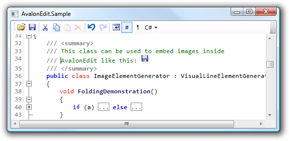

Introduction
Using the Code
Rendering
Noticed how through the whole 'Document' section, there was no mention of extensibility? The text rendering infrastructure now has to compensate for that by being completely extensible.The ICSharpCode.AvalonEdit.Rendering.TextView class is the heart of AvalonEdit.
It takes care of getting the document onto the screen.
To do this in an extensible way, the TextView uses its own kind of model: the VisualLine.
Visual lines are created only for the visible part of the document.
The rendering process looks like this:

The last step in the pipeline is the conversion to one or more System.Windows.Media.TextFormatting.TextLine instances. WPF then takes care of the actual text rendering.
Lifetime of visual lines
When theTextView needs to construct visual lines (usually before rendering), it first
determines which DocumentLine is the top-most visible line in the currently viewed region.
From there, it starts to build visual lines and also immediately does the conversion to TextLine (word-wrapping).
The process stops once the viewed document region is filled.
The resulting visual lines (and TextLines) will be cached and reused in future rendering passes.
When the user scrolls down, only the visual lines coming into view are created, the rest is reused.
The TextView.Redraw methods are used to remove visual lines from the cache.
AvalonEdit will redraw automatically on the affected lines when the document is changed; and will invalidate the whole cache
when any editor options are changed. You will only have to call Redraw manually if you write extensions to the visual line creation process
that maintain their own data source. For example, the FoldingManager invokes Redraw whenever text sections are expanded or collapsed.
Calling Redraw does not cause immediate recreation of the lines.
They are just removed from the cache so that the next rendering step will recreate them.
All redraw methods will enqueue a new rendering step, using the WPF Dispatcher with a low priority.
Elements inside visual line
A visual line consists of a series of elements. These have both aDocumentLength measured in characters as well as a logical length called VisualLength.
For normal text elements, the two lengths are identical; but some elements like fold markers may have a huge document length, yet a logical length of 1.
On the other hand, some elements that are simply inserted by element generators may have a document length of 0, but still need a logical length of at least 1 to allow
addressing elements inside the visual line.
The VisualColumn is a position inside a visual line as measured by the logical length of elements. It is counted starting from 0 at the begin of the visual line.
Also, inside visual lines, instead of normal offsets to the text document; relative offsets are used.
Absolute offset = relative offset + VisualLine.FirstDocumentLine.Offset
This means that offsets inside the visual line do not have to be adjusted when text is inserted or removed in front of the visual line; we simply rely on the document
automatically updating DocumentLine.Offset.
The main job of a visual line element is to implement the CreateTextRun method.
This method should return a System.Windows.Media.TextFormatting.TextRun instance that can be rendered using the TextLine class.
Visual line elements can also handle mouse clicks and control how the caret should move. The mouse click handling might suffice as a light-weight alternative
to embedding inline UIElements in the visual lines.
Element Generators
You can extend the text view by registering a custom class deriving fromVisualLineElementGenerator in the TextView.ElementGenerators collection.
This allows you to add custom VisualLineElements.
Using the InlineObjectElement class, you can even put interactive WPF controls (anything derived from UIElement) into the text document.
For all document text not consumed by element generators, AvalonEdit will create VisualLineText elements.
Usually, the construction of the visual line will stop at the end of the DocumentLine. However, if some VisualLineElementGenerator
creates an element that's longer than the rest of the line, construction of the visual line may resume in another DocumentLine.
Currently, only the FoldingElementGenerator can cause one visual line to span multiple DocumentLines.

Here is the full source code for a class that implements embedding images into AvalonEdit:
public class ImageElementGenerator : VisualLineElementGenerator
{
readonly static Regex imageRegex = new Regex(@"<img src=""([\.\/\w\d]+)""/?>",
RegexOptions.IgnoreCase);
readonly string basePath;
public ImageElementGenerator(string basePath)
{
if (basePath == null)
throw new ArgumentNullException("basePath");
this.basePath = basePath;
}
Match FindMatch(int startOffset)
{
// fetch the end offset of the VisualLine being generated
int endOffset = CurrentContext.VisualLine.LastDocumentLine.EndOffset;
TextDocument document = CurrentContext.Document;
string relevantText = document.GetText(startOffset, endOffset - startOffset);
return imageRegex.Match(relevantText);
}
/// Gets the first offset >= startOffset where the generator wants to construct
/// an element.
/// Return -1 to signal no interest.
public override int GetFirstInterestedOffset(int startOffset)
{
Match m = FindMatch(startOffset);
return m.Success ? (startOffset + m.Index) : -1;
}
/// Constructs an element at the specified offset.
/// May return null if no element should be constructed.
public override VisualLineElement ConstructElement(int offset)
{
Match m = FindMatch(offset);
// check whether there's a match exactly at offset
if (m.Success && m.Index == 0) {
BitmapImage bitmap = LoadBitmap(m.Groups[1].Value);
if (bitmap != null) {
Image image = new Image();
image.Source = bitmap;
image.Width = bitmap.PixelWidth;
image.Height = bitmap.PixelHeight;
// Pass the length of the match to the 'documentLength' parameter
// of InlineObjectElement.
return new InlineObjectElement(m.Length, image);
}
}
return null;
}
BitmapImage LoadBitmap(string fileName)
{
// TODO: add some kind of cache to avoid reloading the image whenever the
// VisualLine is reconstructed
try {
string fullFileName = Path.Combine(basePath, fileName);
if (File.Exists(fullFileName)) {
BitmapImage bitmap = new BitmapImage(new Uri(fullFileName));
bitmap.Freeze();
return bitmap;
}
} catch (ArgumentException) {
// invalid filename syntax
} catch (IOException) {
// other IO error
}
return null;
}
}
Line Transformers
Line transformers can modify the visual lines after they have been generated. The main usage of this is to colorize the text, as done both by syntax highlighting and the selection.
The base classes ColorizingTransformer and DocumentColorizingTransformer help with this task
by providing helper methods for colorizing that split up visual line elements where necessary. The difference between
the two classes is that one works using visual columns whereas the other one uses offsets into the document.
Here is an example DocumentColorizingTransformer that highlights the word 'AvalonEdit' using bold font:
public class ColorizeAvalonEdit : DocumentColorizingTransformer
{
protected override void ColorizeLine(DocumentLine line)
{
int lineStartOffset = line.Offset;
string text = CurrentContext.Document.GetText(line);
int start = 0;
int index;
while ((index = text.IndexOf("AvalonEdit", start)) >= 0) {
base.ChangeLinePart(
lineStartOffset + index, // startOffset
lineStartOffset + index + 10, // endOffset
(VisualLineElement element) => {
// This lambda gets called once for every VisualLineElement
// between the specified offsets.
Typeface tf = element.TextRunProperties.Typeface;
// Replace the typeface with a modified version of
// the same typeface
element.TextRunProperties.SetTypeface(new Typeface(
tf.FontFamily,
FontStyles.Italic,
FontWeights.Bold,
tf.Stretch
));
});
start = index + 1; // search for next occurrence
} } }
Background renderers
Background renderers are simple objects that allow you to draw anything in the text view. They can be used to draw nice-looking backgrounds behind the text.
AvalonEdit contains the class BackgroundGeometryBuilder that helps with this task.
You can use the static BackgroundGeometryBuilder.GetRectsForSegment to fetch a list of rectangles that
contain text from the specified segment (you will get one rectangle per TextLine);
or you can use the instance methods to build a PathGeometry for the text's outline.
AvalonEdit also internally uses this geometry builder to create the selection with the rounded corners.
Inside SharpDevelop, the first option (getting list of rectangles) is used to render the squiggly red line that for compiler errors, while the second option is used to produce nice-looking breakpoint markers.
Points of Interest
Did you learn anything interesting/fun/annoying while writing the code? Did you do anything particularly clever or wild or zany?
History
Keep a running update of any changes or improvements you've made here.
AvalonEdit 5.0 and this sample code is provided under the MIT license.